African Forest Elephant
Loxodonta cyclotis
Critically EndangeredDiscover facts about one of the world’s largest living land mammals and the challenges they face.
Read ArticleMaking the world a better place one day at a time.
The Endangered Animals Encyclopedia species directory is where you can learn more about endangered species that inhabit different parts of the world.
In this directory, each individual species article contains information about the animal, its diet, habitat, and the conservation challenges it faces.
Loxodonta cyclotis
Critically EndangeredDiscover facts about one of the world’s largest living land mammals and the challenges they face.
Read Article
Panthera pardus orientalis
Critically EndangeredFind out some interesting facts about the world’s rarest leopard and their habitat.
Read Article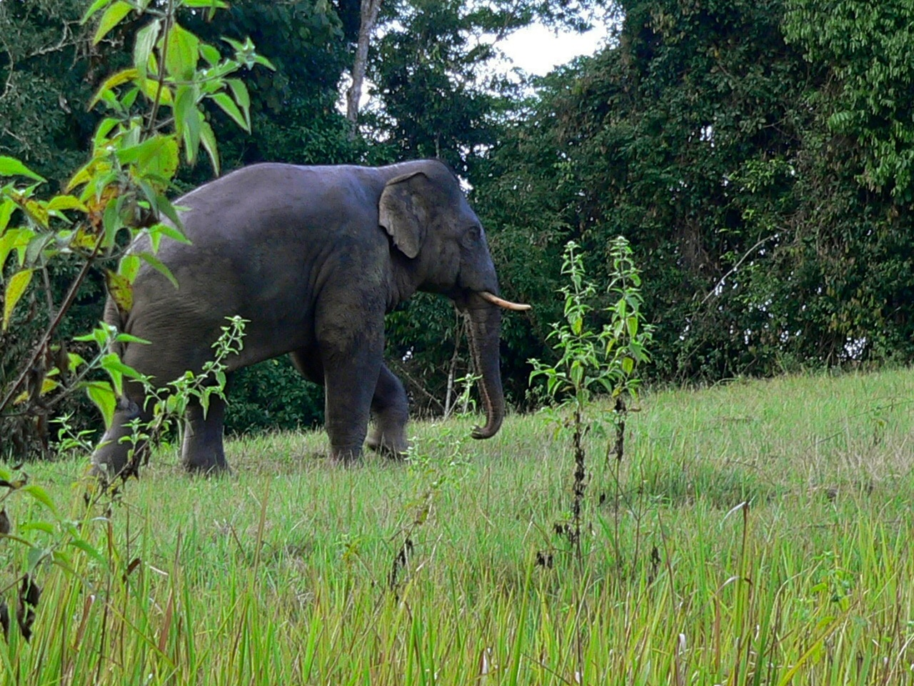
Elephas maximus
EndangeredHere you can learn more about the Asian Elephant and the conservation efforts that are being taken to protect it.
Read Article
Diceros bicornis
Critically EndangeredRead more on how the black rhino became a critically endangered species and how to help.
Read Article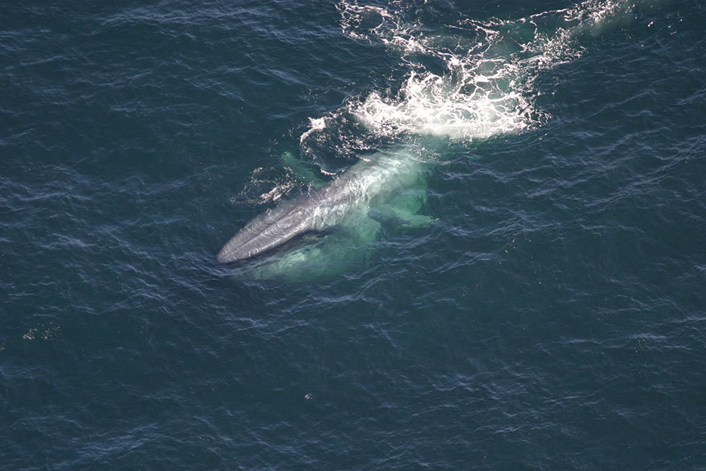
Balaenoptera musculus
EndangeredDid you know that the blue whale is the biggest animal to have ever lived? Click here to learn more interesting facts!
Read Article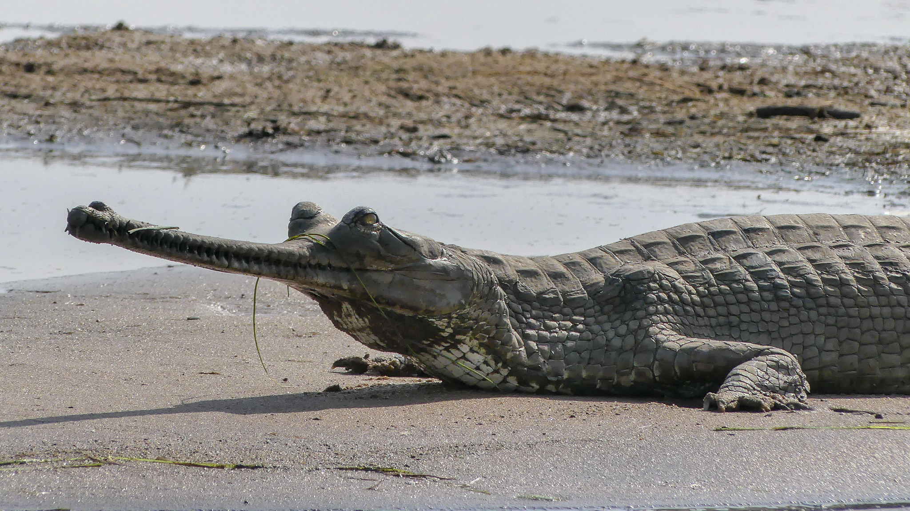
Gavialis gangeticus
Critically EndangeredDiscover more about one of the largest crocodilians and their habitat!
Read Article
Ailuropoda melanoleuca
VulnerableLearn more about these shy, lovable creatures and their habitat.
Read Article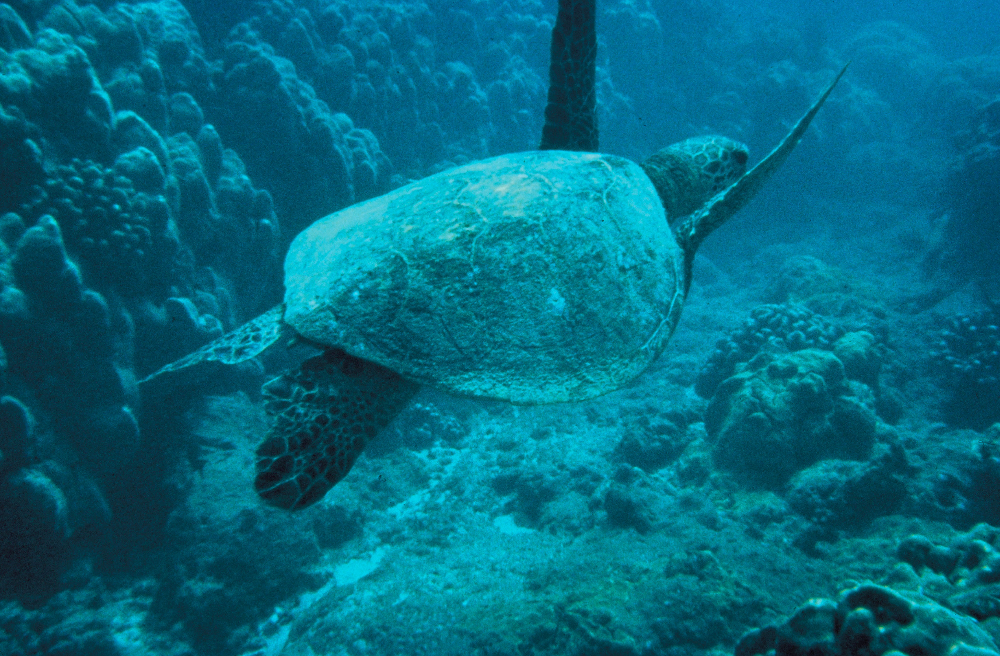
Chelonia mydas
EndangeredGreen sea turtles are one of the world's largest species of turtle. Learn more about them and their habitat here.
Read Article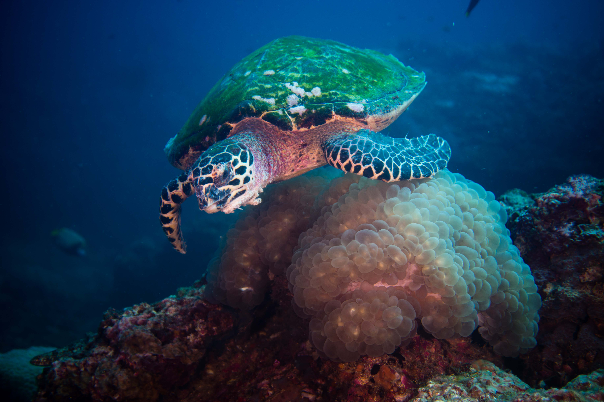
Eretmochelys imbricata
Critically EndangeredDid you know that hawksbill sea turtles have been on Earth for nearly 100 million years? Click here to learn more!
Read Article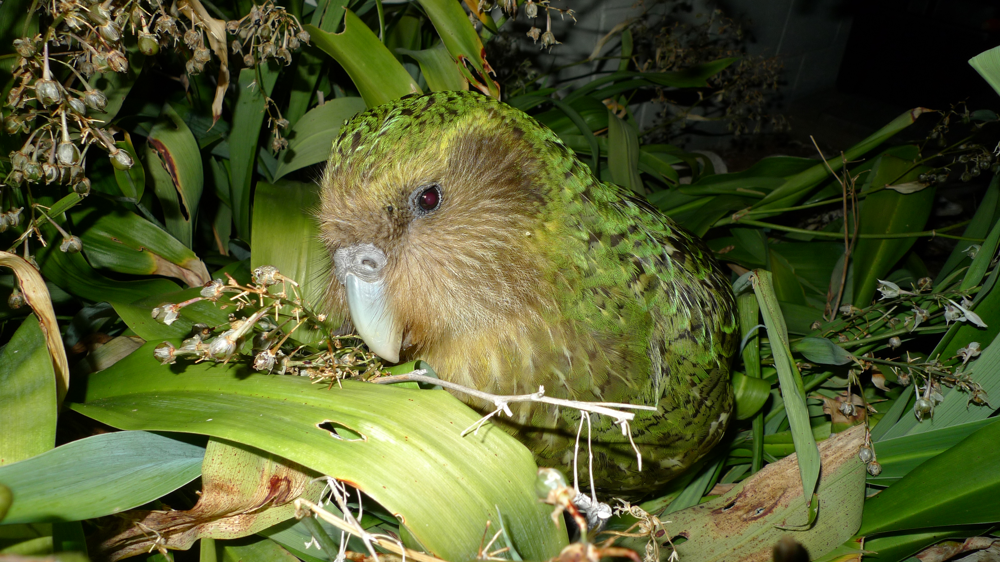
Strigops habroptilus
Critically EndangeredDiscover facts about the world’s heaviest parrot and its behavior.
Read Article
Gorilla beringei beringei
Critically EndangeredClick here to learn more about mountain gorillas and how to protect their habitat!
Read Article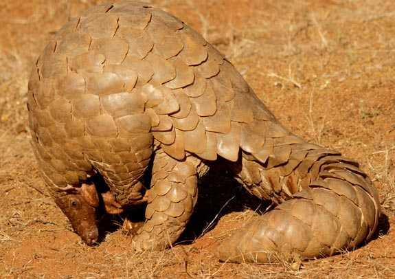
Manis species
EndangeredThe pangolin species is the most trafficked mammal in the world. Discover how you can help and learn more about its habitat.
Read Article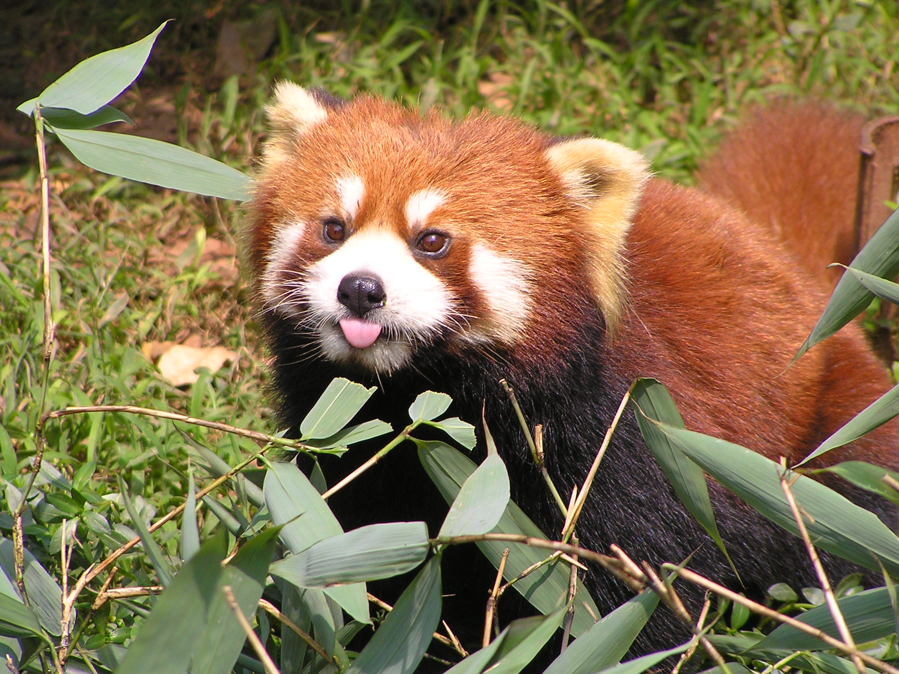
Ailurus fulgens
EndangeredClick here to educate yourself about these tree-dwellers and their habitat.
Read Article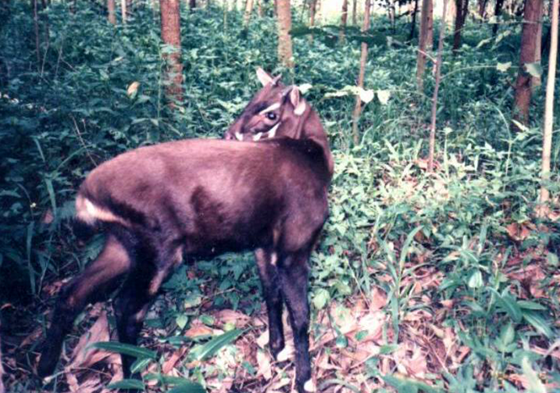
Pseudoryx nghetinhensis
Critically EndangeredFind out some interesting facts about one of the rarest species on the planet.
Read Article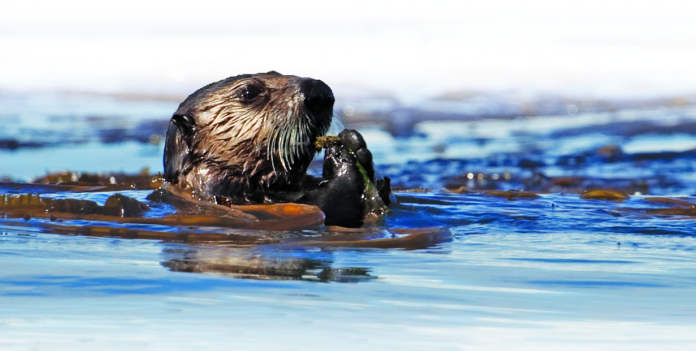
Enhydra lutris
EndangeredDiscover how sea otters contribute to fighting climate change.
Read Article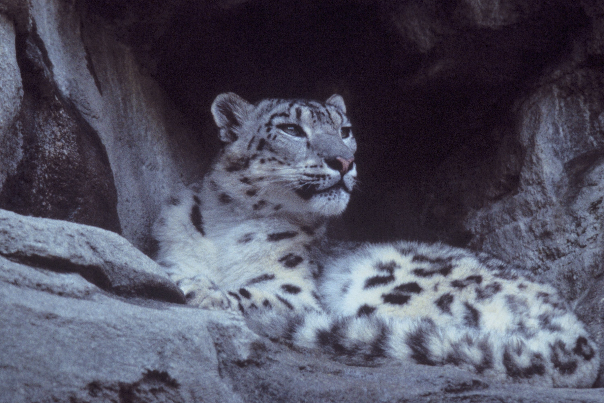
Panthera uncia
VulnerableLearn some interesting facts about the animals known as the “ghosts of the mountains.”
Read Article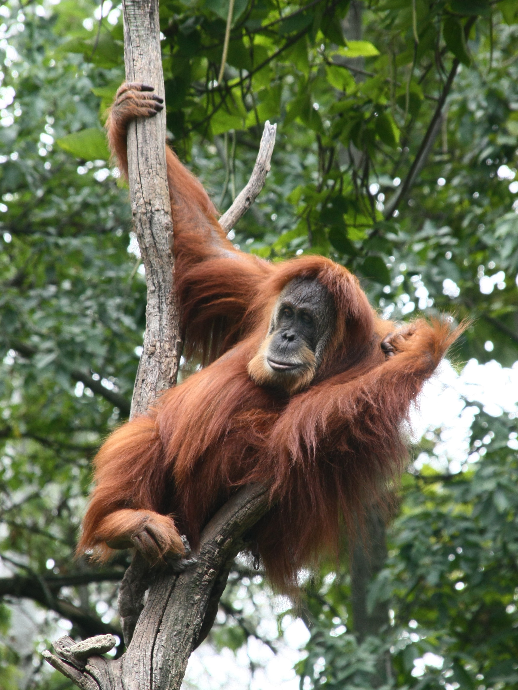
Pongo abelii
Critically EndangeredHere you can learn more about the Sumatran orangutan and how you can help to protect it and its habitat.
Read Article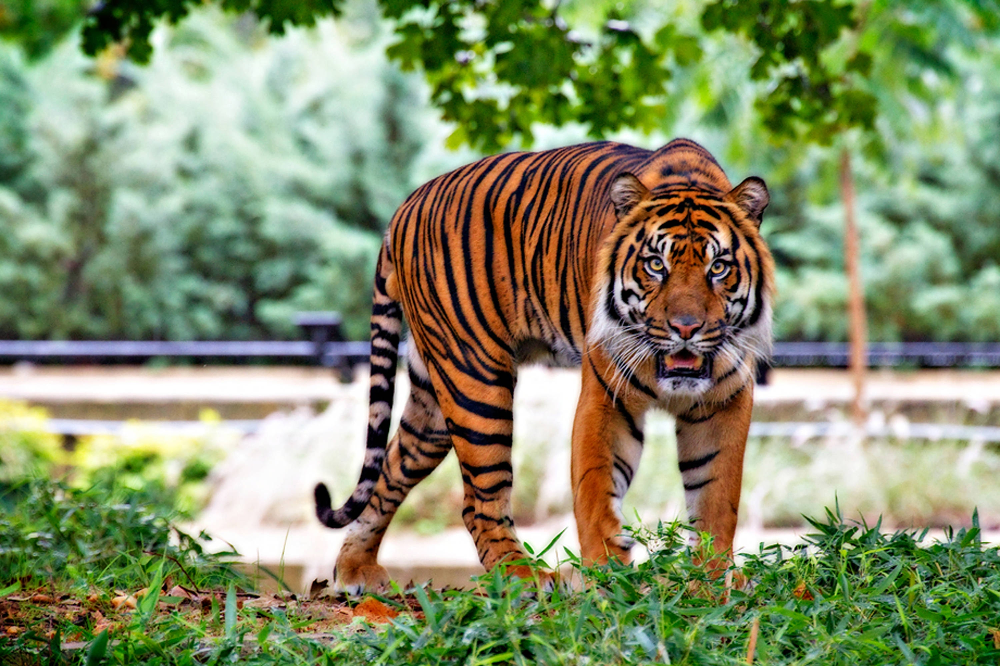
Panthera tigris sumatrae
Critically EndangeredDid you know that the Sumatran tiger is the smallest tiger in the world? Click here to learn more!
Read Article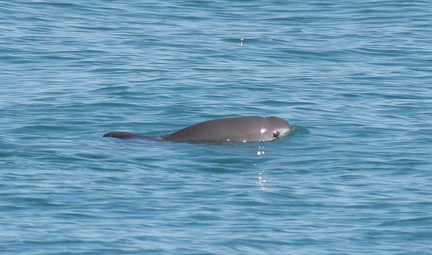
Phocoena sinus
Critically EndangeredLearn more about the world’s rarest marine mammal and its diet and behavior.
Read Article
Rhincodon typus
EndangeredDid you know that whale sharks are the largest fish in the world? Click here to learn more interesting facts!
Read ArticleEndangered animals help maintain equilibrium on our planet. Without them, food chains and habitats would be disrupted and changed forever.
Protecting endangered species through conservation can not only improve the environment but help maintain healthy ecosystems. Making an effort to protect nature not only helps our planet but helps mankind as well.
It doesn’t take much to get involved. Explore more ways how you can help endangered animals and their habitats.
Learn How You Can Help